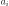
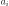

4.1.22. Knak: segmented power law transmission model¶
The knak model is used to model the transmission of any spectrum using a set of contiguous segments with a power-law transmission at each segment.
This component can be useful for new instruments, in order to test large scale calibration errors (effective area errors for example), but other applications can also be made, of course. For example, if the spectrum of the source has an unknown continuum shape with a superimposed absorption model, it is a good trick to model the continuum by a power law, modify that by a knak model with adjustable or fixed transmission at some relevant energies, and then apply the absorption. An example of this last application can be found in Porquet et al. (2004).
The Transmission is given by:
for each value of  between 0 and
between 0 and  , the number of grid
points. The transmission is 1 for
, the number of grid
points. The transmission is 1 for  and .
Further, instead of using the constants and , we
use instead the values of the transmission at , i.e.
. This allows
for a continuous connection between neighbouring segments.
and .
Further, instead of using the constants and , we
use instead the values of the transmission at , i.e.
. This allows
for a continuous connection between neighbouring segments.
Finally, for historical reasons we use here a wavelength grid instead of an energy grid; the corresponding nodes should therefore be in strictly increasing order.
Warning
When applying this model, take care that at least one of
the transmission values is kept fixed (otherwise you may run
the risk that your model is unconstrained, for example if the
normalisation of the continuum is also a free parameter).
The parameters of the model are:
n : The number of grid points. Maximum value is 9.w1 : Wavelength (Å) of the first grid pointf1 : Transmission at .w2 : Wavelength (Å) of the second grid pointf1 : Transmission at .w9 : Wavelength  (Å) of the last grid point
(Å) of the last grid pointf9 : Transmission at . and
will be ignored for
and
will be ignored for  .
.Recommended citation: Porquet et al. (2004).